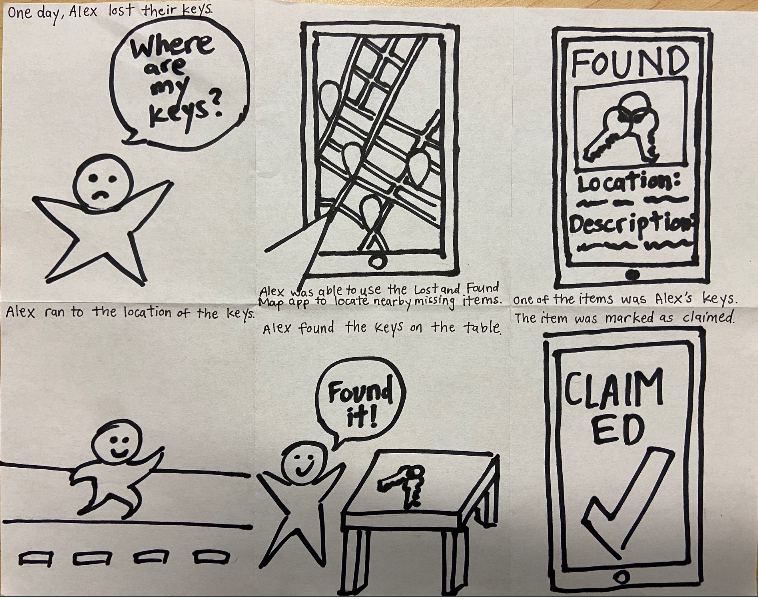
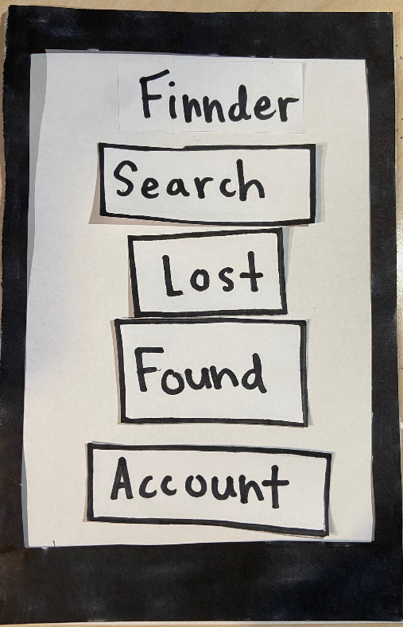

It's easy to misplace objects when you're a busy college student on the go. You have a million things to worry about, but where you left your hydroflask should not be one of them. You try to share about it on Facebook and Reddit, but your unpopular post is easily lost in a sea of pages and threads. Wouldn't it be more efficient to have a centralized app for all things lost and found where you can filter and search for what you need?
Developed in 10 weeks in a team of 3, Find and Seek is a lost and found mobile web app catered to UCSD students to help them find items they've lost. Each week, we learned various aspects of design, web development, and user testing to ultimately create a polished minimum viable product.
Role: As a programmer, my primary focus was on learning how to use Javascript with Node.js. I designed page layouts, managed data in JSON files, set up links and skeleton code for pages, and worked on the posting function, button presses, and overall aesthetic.
Languages/Tools: HTML, CSS, Javascript, Node.js

UCSD students can help others find something they lost in a cheap, convenient, and time-efficient way without having to go on multiple platforms.
We thought about what users felt when they lost something and how they could use our app to solve their problem using storyboards. Implementation-wise, we could solve the problem in different ways. These storyboards serve as a hypothetical as to how effective our solution can be.
Caption: The left storyboard is post-based walks through a simple situation where Sean loses their student ID card and uses our app to find it. Another student finds his card and replies to Sean's post so they can promptly retrieve it. In the right storyboard that is map-based, Alex lost their keys and cannot find them. They open our app and see that someone else has posted its location on the map. Alex can easily go to the key's location and update the status of the post, saying it was found.
In order to design Find and Seek, we needed to find out what our user base (UCSD students) would want in a lost and found app. Originally, it was supposed to be released for anyone to use. However, upon further thought on its implementation, we've decided to limit the user base to just users within UCSD. That way, it is both easier to manage and more likely to gain traction within a smaller community such as a university rather than through a wide release. In addition, we also needed to figure out what our user base did when they lost an item. This would allow us to directly address any issues they had and help plan what features would be useful to implement. After asking several UCSD students to walk me through their process, I found that they mainly relied on social media to post about their item, hoping that other students would notify them if it happened to be found. However, it was very easy for their post to get lost on facebook or reddit, since other users use these platforms for a variety of things. Sometimes searching for their post was a hassle if it was not popular enough to show up. Having to post on multiple platforms also made it harder to keep track of replies and slows the process of finding their lost item. Thus, we needed to create a centralized app that would streamline the search process so users can find their item more efficiently.
In the table above, we assessed potential competitors based on features that would make a lost and found app stand out. Since it is free to post on social media, Facebook and Reddit seem more common than other competitors, which are not free. Physical trackers such as Tile and TrackR seem like a good solution, but the users in their reviews often found the range to be too short or generally not worth the amount of money. LoFo seemed to be the most viable competitor, as most of its features were free, but was more focused on lost and found items like how we wanted our app to be. For these reasons, we wanted to make a free app with a better search algorithm than other platforms and rely on community efforts instead of a physical tracker.
Paper prototype 1 (Find my Item) focused on the location aspect of finding items for users who were more space-oriented. On the home page, users would select the "Map" option and be taken to a real-time map that would show them the possible locations of items other users have lost. Each pin represented an item that could be clicked on for more information and the circle around it was its possible range. There is a search bar at the top of the screen to make finding specific items nearby easier. In order for the user to create a pin for their lost item, they would have to hold down on the screen and adjust the location of the pin. Then, they could add more information about the item and other users could see it.
Paper Prototype 2 (Finnder) had more options on the home screen for a user, who could search for an item, manage their account, or browse other items that were lost or found. The account page would include their username, a profile picture, and lists of items they've previously lost and found. Clicking on "Lost" or "Found" on the home page would take the user to a scrollable list of items. If anything seems interesting, they could select a certain post to see more information about it, such as where it was last seen and the owner's contact information. In addition, the user could make a post themselves or search for the item they are looking for with a filter option.
After testing the paper prototypes, we found there were issues that we did not address. For example in prototype 1, we did not address the need to make clear where the user was on the map. Prototype 1 seemed too simple and did not keep the user's attention, so we decided to proceed with prototype 2, which had more useful features. The result is the wireframe below and is a rough sketch of what our app could look like. The name was changed to "Find and Seek" because "Finnder" sounded too much like "Tinder" and we did not want users associating the two together. Some users were confused about the priority of buttons in the paper prototype, so we changed the labels of the buttons to make it more related to the motivations of the user. The buttons related to accounts were subsequently moved to the bottom. Moreover, we thought it would be easier for users to navigate through posts if we had only one page with tabs for lost and found items, as opposed to two pages in the prototype.
Wireframe
Initial App from Wireframe
Through our tests, we noticed three general patterns in tester behavior. The users valued and wanted the app to be simple, clear, and flexible. These were all showcased in the issues users communicated to us during the tests. Portions of the app, especially when creating an account, had too many requirements which deterred from the experience. Features of the app, such as buttons, were at times ambiguous. At other times, information seemed redundant. Lastly, the lack of ability to edit posts showed that testers wanted more freedom. They had these patterns because we assumed that our buttons and forms would be intuitive after working on our app for so long. However, our testing has shown that they are not and first time users were often confused. This led us to change where we positioned our buttons in the final app.
Caption: These two users are confused about what page the back button should go to
Users who tested Find and Seek on their phone had a difficult time reaching for the corner where the search button was and we wondered if it was more convenient to place the search bar at the bottom. That way, users would be able to search faster, which was the main goal of our app. The "A" page has the search bar at the top of our page and is our control, while the "B" page has the search bar on the bottom.
Page A Page B
We used an A/B Google Analytics test to see if more people would use the search bar if it was at the bottom. Half of the visitors would be randomly given page A while the other half would be given page B. Regardless of which page they are given, we logged if they clicked the search bar or not to see if page B was more popular. However, the p-value was not significant, so we decided not to change our original layout of the search bar.


From start to finish, Find and Seek was challenging to design and implement, but our efforts were well rewarded. Our home page changed from 4 buttons to 2 and reflected a user need for simplicity. Throughout our iterations, we tried to make our features clear and easy to use. For example, the "new post" button is large and stands out at the bottom of the screen, making it intuitive for users who want to make a new post. Moreover, they can use the search bar to find specific items, look at what other people have posted, and view their account page to see what items they've lost or found before.